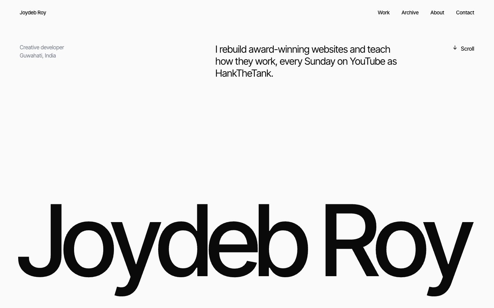
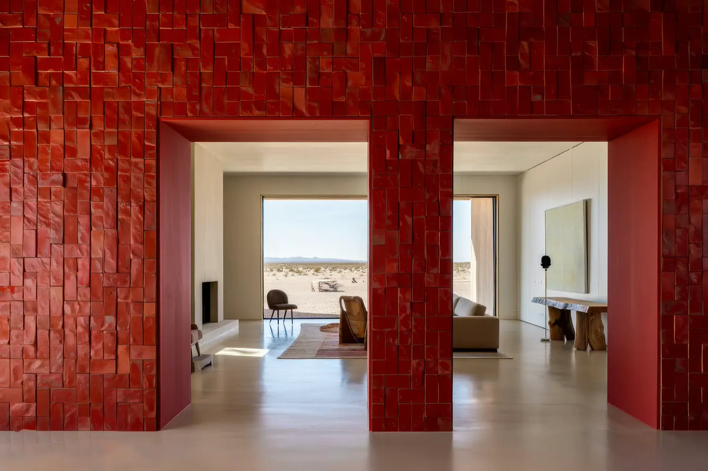

One class turns the page sideways.
The section is pinned and the row slides for exactly as far as it overflows.
Tweenwind
Add a class and the element animates when it scrolls into view. Add a few more for pinned scenes, split text and timelines tied to the scrollbar. There is no JavaScript to write, and it is free.
No JavaScript was written for it.
A loader whose digits roll to 100, a name that rises out of its masks, images that wipe in, a pinned process and an archive that slides sideways. Open it and view its source: one script tag, and classes.

One line. GSAP is loaded for you.
It finds every gs- class on the page, loads GSAP and only the plugins those classes need, and keeps watching for elements you add later. It works in plain HTML and in any framework.
gs-fad-up on localhost and the console asks if you meant gs-fade-up.Click a card to play it again.
Each one plays when the element scrolls into view, once. Add a number to change the amount: gs-fade-up-80 travels 80 pixels and gs-zoom-in-0.5 starts at half size.
Inside the brackets is what you would pass to gsap.from() or gsap.to(). Any property, any GSAP setting. Use _ where you need a space.
Put gs-stagger on the parent and its children take turns. Each child waits until it scrolls into view, so a long grid animates row by row instead of all at once off screen.
Split by line, word or letter.
The text is split where it really wraps, and split again if the width changes. Screen readers still get the whole sentence. When the animation ends, the heading is plain text again.
gs-count counts up to the number already in the text and keeps its commas, decimals and units. gs-odometer rolls every digit into place in its own mask, and gs-odometer-steps makes it stop and rest on the way, like a page loader. gs-scramble and gs-type do what they say.
Everything below is running on this page.
Add gs-scrub and the animation follows the scroll instead of the clock, from the moment the element enters the screen until it leaves. Scroll this page a little.
One class on an image. It drifts inside its frame as you scroll, and it is zoomed just enough that an edge never shows. A bigger number drifts further.
<figure>
<img class="gs-parallax-22" src="pool.webp" alt="...">
</figure>
gs-timeline turns a section into a sequence: every animated element inside becomes a step, in page order. Add gs-pin and gs-scrub and the section stays put while you scroll through the steps.
Pin a section.
Scrub a timeline.
Write no JavaScript.
<section class="gs-timeline gs-pin-300 gs-scrub">
<div class="photo gs-from-[scale:0.5,borderRadius:32px]">
<img src="alpine.webp" alt="...">
</div>
<p class="gs-fade-up">Pin a section.</p>
<p class="gs-fade-up">Scrub a timeline.</p>
<p class="gs-fade-up">Write no JavaScript.</p>
</section>
gs-horizontal pins a section and slides its first child across for as long as it overflows. Things inside still reveal as they come into view, and gs-snap settles on each panel.
The section is pinned and the row slides for exactly as far as it overflows.

This text waited for its panel to slide into view, like it would anywhere else.
That is the snap class. Then the row ends and the page scrolls on.
<section class="gs-horizontal gs-snap">
<div class="row">
<article>
<img src="dunes.webp" alt="...">
<h3 class="gs-fade-up">One class turns the page sideways.</h3>
</article>
<article>...</article>
<article>...</article>
</div>
</section>
gs-frames draws a numbered set of images on a canvas. It loads them a few at a time once the canvas is near the screen, and sizes the canvas for sharp screens.
<section class="gs-timeline gs-pin-200 gs-scrub">
<canvas class="gs-frames"
data-gs-frames="stone/stone-[001-060].webp"></canvas>
</section>
Split text and scrub work together. These words fill in as they pass the middle of the screen.
Words can fill in as you read them, tied to the scrollbar instead of a clock, with one line of classes.
<p class="gs-split-words gs-from-[opacity:0.14] gs-stagger-0.25
gs-scrub gs-start-[top_82%] gs-end-[bottom_52%]">
Words can fill in as you read them...
</p>
A prefix says when.
hover:, press:, focus: and click: play the animation on that moment and run it backwards when it ends. group-hover: listens to the nearest gs-group instead.
A click plays forward, the next click plays back. Point gs-trigger at the button, and aria-expanded on it is kept up to date. Escape closes it, and with gs-outside so does a click anywhere else. With gs-timeline, the links come in one after another.
gs-marquee copies the items until they fill the width and loops them without a seam. It can pause under the pointer and speed up with the scroll.
The same prefixes as Tailwind.
A class behind md: applies from 768 pixels up and replaces the plain one. max-md: applies below. gs-off switches an element's animations off. Resize the window and it rebuilds itself.
<!-- From below on phones, from the right on wider screens -->
<div class="gs-fade-up md:gs-fade-left">
<!-- No parallax on small screens -->
<img class="gs-parallax max-md:gs-off">
<!-- A longer pin on desktop -->
<section class="gs-timeline gs-scrub gs-pin-150 lg:gs-pin-300">
<!-- A gentler version for visitors who ask for less motion -->
<h2 class="gs-flip-up motion-reduce:gs-fade">
gs-motion-ok to keep one anyway, or a motion-reduce: class to give it a calmer version.No hooks, no refs, no cleanup code.
Render <Gs /> once and write className as usual. It starts after hydration, so there is no mismatch, and it follows the page as React adds, changes and removes elements.
// A server component. Nothing here runs on the client except the classes.
export default function Features({ items }) {
return (
<section className="gs-timeline gs-pin-200 gs-scrub">
<h2 className="gs-split-lines gs-mask gs-slide-up">What you get</h2>
<ul className="gs-fade-up gs-stagger-0.1">
{items.map((item) => <li key={item}>{item}</li>)}
</ul>
</section>
);
}
<Gs>...</Gs> and its animations are removed the instant React unmounts it.Every one also works in data-gs, without the prefix.
| gs-fade-up | A ready-made reveal. The cards above show twenty of them. gs-fade-in, gs-slide-down and gs-slide-right work the same way. |
|---|---|
| gs-fade-up-80 | The same, with your own amount. |
| gs-float gs-spin gs-pulse gs-wiggle | Loops that run while the element is on screen. |
| gs-from-[y:50,opacity:0] | Start from these values and end as the page looks. |
| gs-to-[x:200,rotate:90] | Start as the page looks and end on these values. |
| gs-from-y-50 gs-to-x-200 | The short form, one value at a time. |
| gs-duration-1.2 | Seconds, like GSAP. 500ms and 500 also work. |
|---|---|
| gs-delay-0.3 | Wait before starting. |
| gs-ease-power3.out | Any GSAP ease. gs-ease-[0.7,0,0.3,1] takes a cubic-bezier. |
| gs-repeat-2 gs-repeat | Repeat a number of times, or forever. |
| gs-yoyo | Go back and forth when repeating. |
| gs-repeat-delay-0.5 | Pause between repeats. |
| gs-stagger-0.1 | Animate the children, this far apart. |
|---|---|
| gs-stagger-center | Start from the center, the end, the edges or at random. From the center or the edges the whole wave takes as long as it would from the start, so neighbours are twice as far apart. |
| gs-children | Animate the children with the default gap. |
| gs-target-[.dot] | Animate the elements inside that match. |
| gs-split-lines | Split the text. Also words and chars. |
| gs-mask | Clip each split piece, so it rises out of nowhere. |
| (nothing) | When it scrolls into view, once. |
|---|---|
| gs-replay | Again every time you scroll down to it. It resets once it is back below the screen. |
| gs-reverse | Run backwards when you scroll back up past it. |
| gs-start-[top_70%] | Where it begins. One word works too: gs-start-center. |
| gs-trigger-[#hero] | Let another element decide when. With click: it names the buttons, and several may match. |
| click:gs-outside | A click anywhere else closes it, and so does Escape. |
| load: | As soon as the page is ready. |
| hover: press: focus: click: | On that moment, and back when it ends. |
| group-hover: | When the nearest gs-group is hovered. |
| gs-scrub | Follow the scrollbar, evenly unless you add an ease. gs-scrub-1 sets the smoothing, gs-scrub-0 removes it. |
|---|---|
| gs-pin | Hold the element for one screen of scrolling. |
| gs-pin-300 | Hold it for three screens. |
| gs-end-[bottom_top] | Where it stops. |
| gs-snap | Settle on the steps of a timeline or the panels of a row. |
| gs-toggle-[is-seen] | Add a class of yours while it is in range. |
| gs-markers | Show where it starts and ends, for debugging. |
| gs-st-[pinSpacing:false] | Any other ScrollTrigger option. |
| gs-timeline | Play every animated element inside as one sequence. |
|---|---|
| gs-with | Start together with the step before. |
| gs-at-[-=0.3] | A GSAP position: overlap, gap, time or label. |
| gs-label-[intro] | Name a step so others can use gs-at-[intro]. |
| click:gs-timeline | A sequence opened by a click instead of the scroll. |
| gs-timeline in gs-timeline | The inner one is a single step of the outer one. |
| gs-timeline gs-repeat | Loop the whole sequence. gs-repeat-delay-2 waits between rounds. |
| gs-parallax-20 | Drift against the scroll. Images are zoomed to cover. |
|---|---|
| gs-horizontal | Pin and slide the first child sideways. |
| gs-frames | An image sequence on a canvas, from data-gs-frames. |
| gs-marquee | An endless row. Add -right, -120, -pause or -scroll, or several at once. |
| gs-magnetic gs-tilt | Lean toward the pointer, or turn in 3D. |
| gs-pan-x-15vw | Slide against the pointer, like looking around a wall of photos. gs-pan is 30px each way. |
| gs-count | Count up to the number in the text. |
| gs-odometer | Roll every digit into place in its own mask. |
| gs-odometer-steps | Stop and rest on the way, like a loader. gs-odometer-[32,71,100] picks the stops. |
| gs-draw gs-scramble gs-type | Draw SVG strokes, scramble text, type text. |
| gs-smooth | Smooth scrolling for the page, on the wrapper around your content. |
| gs-scroll-to | A link that glides to its #target. |
| sm: md: lg: xl: 2xl: | From that width up. Replaces the plain class. |
|---|---|
| max-md: | Below that width. |
| min-[900px]: max-[900px]: | Your own width. |
| motion-safe: motion-reduce: | By the visitor's motion setting. |
| pointer-fine: pointer-coarse: | Mouse or touch. |
| gs-off | No animation on this element. |
| gs-motion-ok | Keep it even with reduced motion on. |
It is all still GSAP underneath.
Set the defaults once, turn a motion you use everywhere into a class of its own, and reach the real GSAP timeline behind any element when you need to steer it.
// Defaults for the whole site
gs.config({ duration: 1, ease: "expo.out", distance: 60 });
// A class of your own: gs-swoop
gs.preset("swoop", { from: { autoAlpha: 0, y: 80, rotation: 6 } });
// Anything GSAP can do, as a class: gs-glow (it runs the headline on this page)
gs.preset("glow", {
build(timeline, words) {
timeline.from(words, { opacity: 0, duration: 0.45, stagger: 0.045 });
},
});
// The GSAP timeline behind an element
const [timeline] = gs.get("#hero");
timeline.timeScale(2);
// Events, on the element itself
document.addEventListener("gs:complete", (event) => console.log(event.target));